În stînga este slide-ul din curs, în dreapta aceeași figură, calculată în browser din aceleași date. Butonul ▶ modifică parametrul pas cu pas.
Registrul de ordine limită · Spread-ul bid-ask · Ilichiditatea și tiparele intrazilnice · Informația și prețurile · Impactul asupra prețului și execuția optimă · Tranzacționarea de înaltă frecvență și stresul pe piață · Studii de caz: competiția pentru viteză și momentum-ul intrazilnic · AI pentru descoperire științifică
Registrul de ordine limită
Un registru de ordine simulat
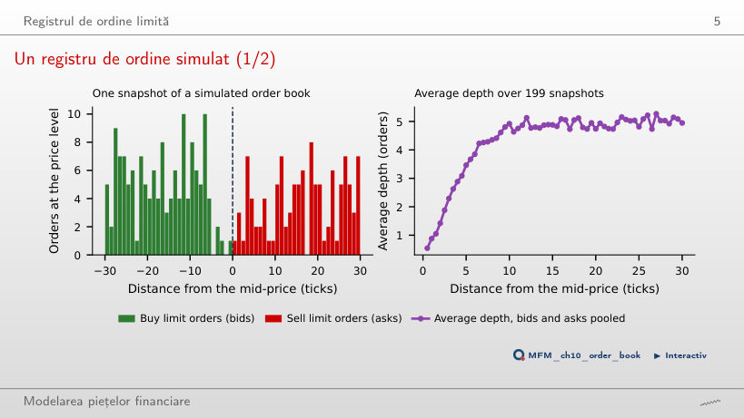
Răspuns
Departe de mijloc. Adîncimea medie este 0,8 ordine la 1 pas de mijloc, 4,8 la 10 pași și 5,0 la 25 de pași. Lîngă mijloc, ordinele la piață consumă lichiditatea mai repede decît o refac ordinele limită; spread-ul are în medie 3,23 pași de cotare.
Impactul unui ordin la piață asupra prețului
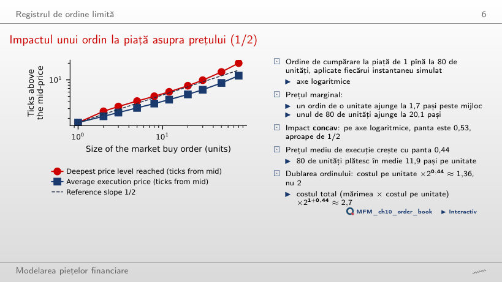
Răspuns
De circa 12 ori: de la 1,7 la 20,1 pași. Pe axe logaritmice panta este 0,53, aproape de 1/2, deci impactul este concav. Prețul mediu de execuție crește cu panta 0,44: cele 80 de unități plătesc în medie 11,9 pași pe unitate.
Spread-ul bid-ask
Bid-ask bounce (simulare)
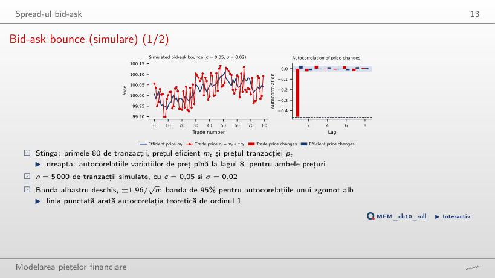
Răspuns
Nu. Autocorelația lor de ordinul 1 este −0,458, aproape de valoarea teoretică −c²/(σ² + 2c²) = −0,463. Estimatorul Roll dă ŝ = 0,0998, față de spread-ul adevărat 2c = 0,10. După lagul 1, autocorelațiile rămîn în banda de 95%.
Estimatori de spread la două frecvențe: SPY
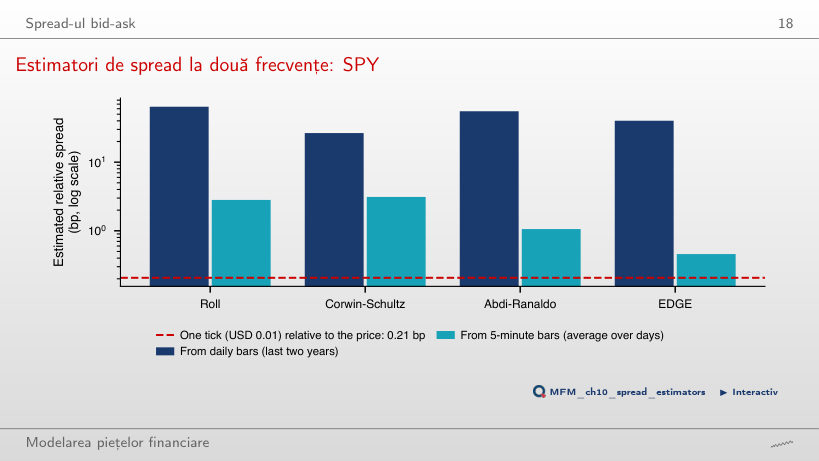
Răspuns
EDGE pe barele de 5 minute: 0,46 pb; intervalul de 95% pentru media estimatorului, din bootstrap pe blocuri de 20 de zile, este [0,41; 0,51]. Pe bare zilnice toate estimările sînt cu două ordine de mărime peste un pas (Roll 64,3, Corwin–Schultz 26,5, Abdi–Ranaldo 55,1 și EDGE 40,1 pb), pentru că intervalul zilnic este dominat de volatilitate.
Estimări ale spread-ului pentru 25 de active
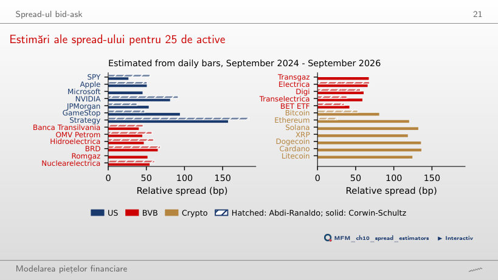
Răspuns
Nu. Valoarea tranzacționată zilnică mediană este 10 505 milioane USD în SUA și 0,34 milioane USD la BVB, un raport de circa 31 000. Estimările din bare zilnice ordonează activele după volatilitate (corelația Spearman cu volatilitatea anualizată este 0,94), iar Abdi–Ranaldo este 0 pentru 8 din cele 25 de active.
Ilichiditatea și tiparele intrazilnice
Ilichiditatea Amihud pentru 25 de active
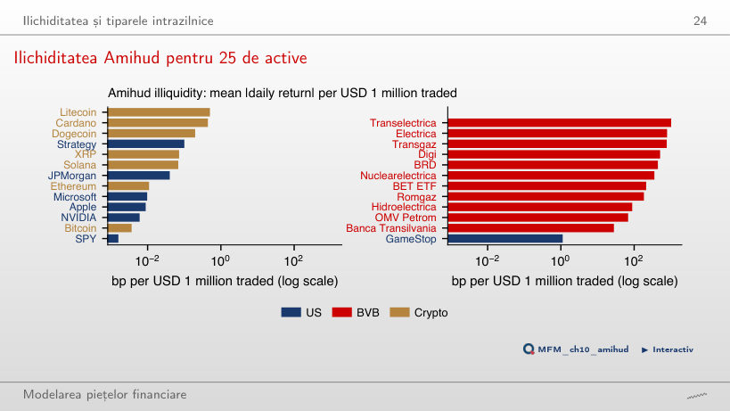
Răspuns
De circa 17 600 de ori: 28,0 pb față de 0,0016 pb la 1 milion USD tranzacționat. Bitcoin are 0,0037 pb, aproape de SPY, iar Transelectrica 1 024,0 pb. Raportul Amihud separă cele trei piețe prin ordine de mărime, ceea ce estimatorii de spread din bare zilnice nu fac.
Ilichiditatea în timp: trei piețe
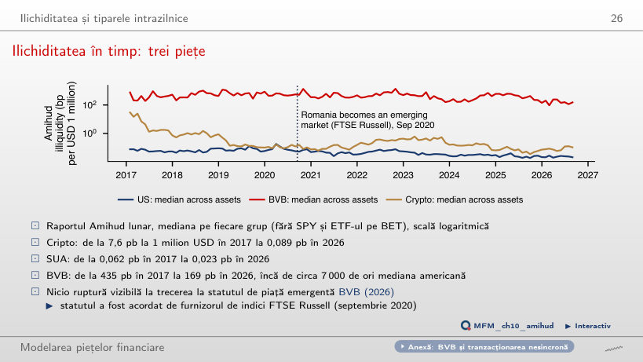
Răspuns
Nu se vede nicio ruptură în septembrie 2020. Mediana BVB scade treptat, de la 435 pb la 1 milion USD în 2017 la 169 pb în 2026, și rămîne de circa 7 000 de ori peste mediana americană (0,023 pb în 2026). Cea mai mare scădere o au cripto-activele: de la 7,6 pb la 0,089 pb.
SPY în cursul zilei de tranzacționare
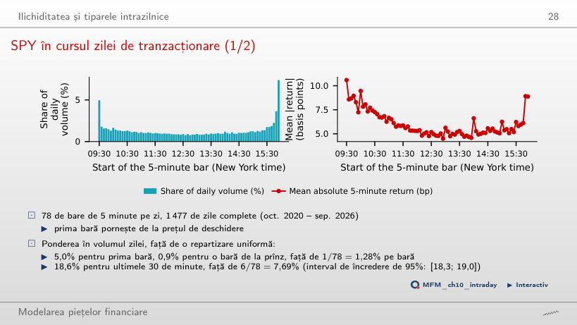
Răspuns
18,6%, față de 12,7% în primele 30 de minute și 0,9% pentru o bară de 5 minute de la prînz. Randamentul absolut mediu este 10,6 pb în prima bară și 5,1 pb la prînz, un raport de 2,06.
Lichiditatea și volatilitatea: SPY și VIX
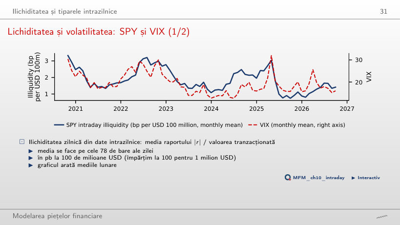
Răspuns
Da. Corelația este 0,58 pe date zilnice și 0,69 pe mediile lunare, iar elasticitatea logaritmului ilichidității față de logaritmul VIX este 0,95 (eroare standard HAC 0,12). În aprilie 2025 ilichiditatea a fost 3,04 pb la 100 de milioane USD, față de o medie de 1,83.
Informația și prețurile
Lambda lui Kyle și profitul investitorului din interior
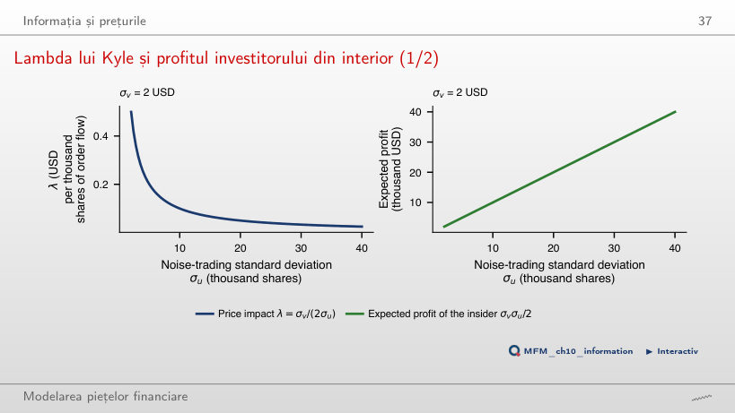
Răspuns
λ = σv/(2σu) se înjumătățește, deci adîncimea pieței 1/λ se dublează; profitul așteptat σvσu/2 se dublează și el. Investitorul din interior tranzacționează mai agresiv (β = σu/σv), iar prețul dezvăluie tot jumătate din informația privată.
Impactul asupra prețului și execuția optimă
Traiectorii optime și frontiera eficientă
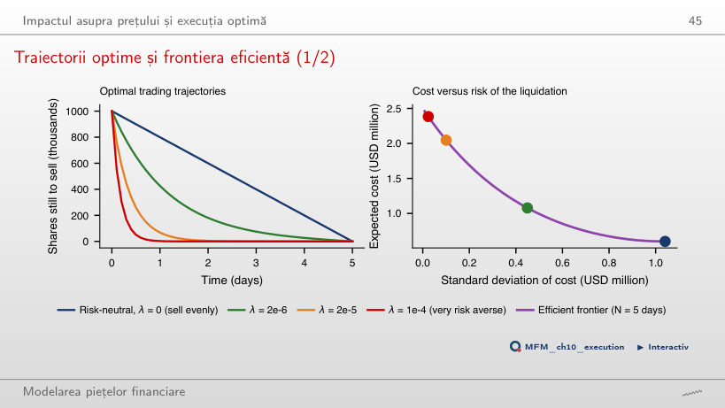
Răspuns
Cu λ = 2·10⁻⁶, abaterea standard a costului scade de la 1,04 milioane USD (vînzare uniformă) la 0,45 milioane USD, iar costul așteptat crește cu 0,48 milioane USD, de la 0,60 la 1,08 milioane. În prima zi se vinde 57% din poziție. Frontiera este convexă: primele reduceri de risc sînt ieftine, ultimele scumpe.
Tranzacționarea de înaltă frecvență și stresul pe piață
Crahul fulger din 6 mai 2010
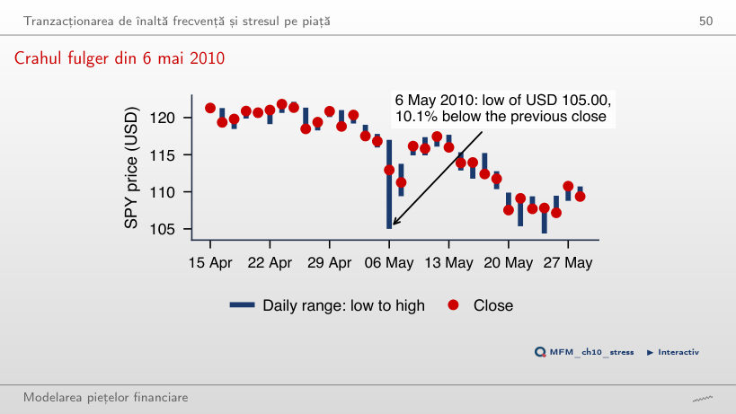
Răspuns
Minimul, 105,00 USD, a fost cu 10,1% sub închiderea anterioară (116,82 USD), dar închiderea a fost doar cu 3,3% mai jos. Volumul zilei a fost de 3,0 ori mediana zilelor anterioare. Barele zilnice arată intervalul, nu și căderea și revenirea din cursul zilei.
Studii de caz: competiția pentru viteză și momentum-ul intrazilnic
Studiu de caz: taxa zilnică implicită pentru SPY
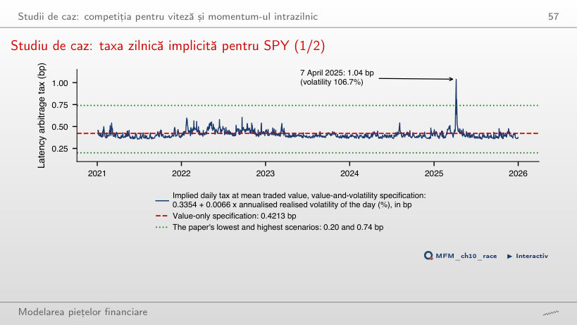
Răspuns
În 2 din cele 1 244 de zile. Maximul, 1,04 pb, apare pe 7 aprilie 2025, cu o volatilitate realizată de 106,7%. Mediana taxei este 0,40 pb, apropiată de cei 0,419 pb măsurați la Londra, iar în 30% din zile taxa depășește 0,4213 pb.
Studiu de caz: momentum-ul intrazilnic al SPY, 2020–2026
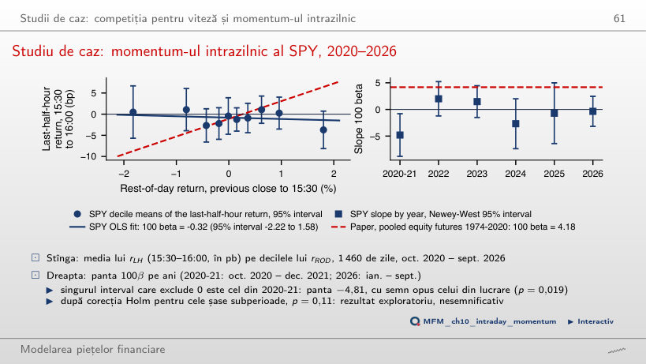
Răspuns
Nu identificăm momentum pozitiv semnificativ. Pe cele 1 460 de zile din oct. 2020 – sept. 2026, panta este 100β = −0,32 (t = −0,33), cu intervalul de 95% [−2,22; 1,58]: panta lucrării, 4,18, este în afara lui. Singura perioadă cu un interval care exclude 0 este 2020-21, cu panta −4,81, de semn opus (p = 0,019; după corecția Holm pentru șase subperioade, p = 0,11). Pentru ultimele 10 minute panta este −1,48 (p = 0,043): un coeficient negativ, nesemnificativ după corecția Holm pentru șase intervale (p = 0,26).
AI pentru descoperire științifică
Mini studiu de caz: cost sau volatilitate?
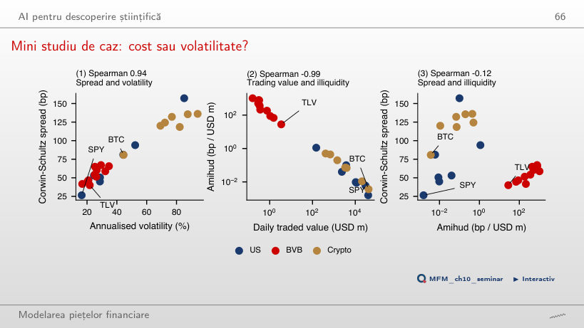
Răspuns
Volatilitatea. Corelația Spearman cu volatilitatea anualizată este 0,94, iar cu raportul Amihud −0,12 (p = 0,58). Diferența dintre cele două corelații este 1,06, cu intervalul de 95% [0,58; 1,44] pe active. Raportul Amihud și valoarea tranzacționată au corelația −0,99.
SPY: bare de 5 minute, sesiunea regulată, octombrie 2020 – septembrie 2026, și bare zilnice. Cele 25 de active din SUA, de la BVB și cripto: bare zilnice, septembrie 2024 – septembrie 2026; valorile tranzacționate la BVB sînt convertite în USD. Prețuri EODHD; VIX. Registrul de ordine și modelul Roll sînt simulate.